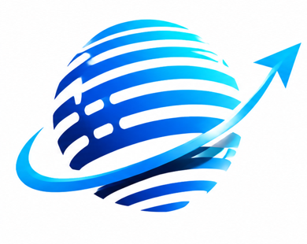
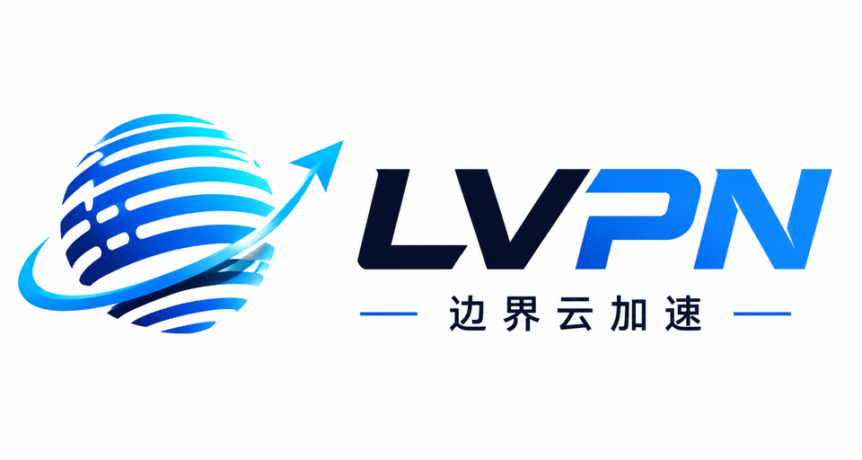
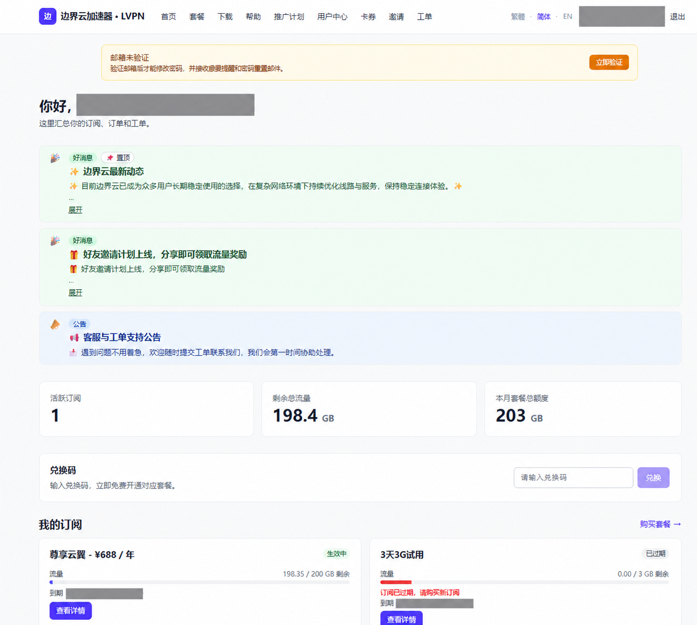
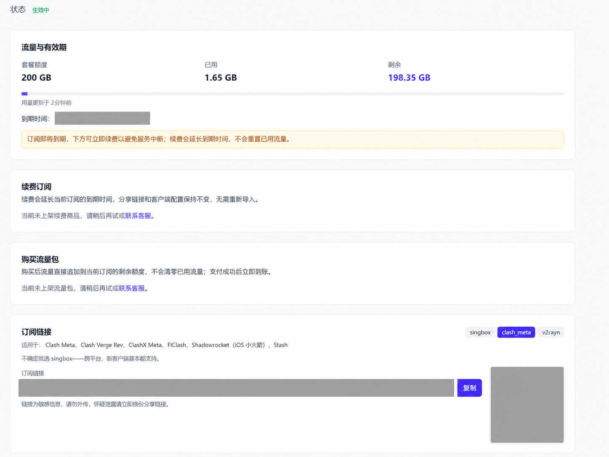
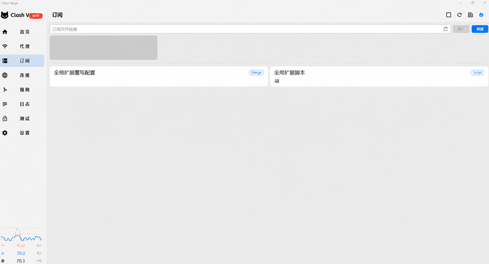
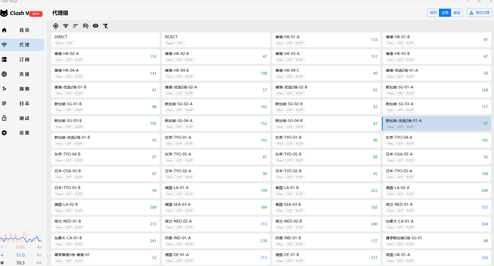

01
注册并获取订阅
登录边界云用户中心，选择流量套餐后复制专属订阅地址。订阅链接等同于账户凭证，请勿公开分享。
前往边界云注册 ↗
边界云LVPN GUIDE从 Clash 客户端下载、安装、后台获取订阅，到导入配置、选择节点和开启系统代理，跟着九个步骤完成首次连接。

请核对浏览器地址栏中的完整域名。不要在相似域名、搜索广告落地页或陌生人发送的页面中输入账号、密码、付款信息和订阅链接。
不需要修改复杂参数。准备好 Windows 电脑和边界云订阅，按下面顺序完成安装与连接。
登录边界云用户中心，选择流量套餐后复制专属订阅地址。订阅链接等同于账户凭证，请勿公开分享。
前往边界云注册 ↗前往边界云下载中心，获取适用于 Windows 10 / Windows 11 的 Clash 客户端并完成安装。
下载 Windows 客户端 ↗打开 Clash，在订阅、配置或 Profiles 页面粘贴订阅地址，点击导入或更新，等待节点列表出现。
新手建议先选择自动线路，也可以按延迟选择香港、日本或新加坡节点，然后开启系统代理。
下面以 Windows 版 Clash Verge 为例，从下载到连接验证完整演示。真实截图中的账号、订阅链接、二维码和日期均已脱敏；示意界面会单独标注。
适用于 Windows 10 / 11
如果提示缺少 WebView2，请安装微软 WebView2 Runtime，或使用下载中心提供的内置 WebView2 版本。
选择安装位置并完成安装


如果提示下载失败，先检查订阅是否有效，再确认 Windows 时间与网络正常。

订阅链接失效、套餐到期或本地网络异常，都可能导致更新失败。

订阅配置
更新成功节点延迟
正常代理模式
规则系统代理
已开启网页访问
正常对大多数用户，推荐日常使用规则模式。它会自动判断哪些连接需要代理，国内网站保持直连，兼顾速度和流量消耗。
按规则自动分流，适合网页、AI 工具和日常办公。
大部分流量经过代理，适合临时测试和问题排查。
关闭代理转发，恢复本地网络的直接连接。
“已连接但无法上网”“订阅更新失败”“节点延迟高”通常可以通过下面的顺序快速定位。
确认系统代理开关已开启，避免与其他代理软件同时运行。
检查套餐是否到期、流量是否用完以及订阅链接是否失效。
测试香港、日本、新加坡节点，优先选择低延迟、低负载线路。
完全退出 Clash 后重新打开，必要时重启电脑并检查网络设置。
覆盖安装、订阅、节点、系统代理和连接失败等常见搜索问题。
先确认系统代理已开启，再检查订阅是否过期、节点是否可用。可以切换另一个节点后重试。
可以。本教程适用于 Windows 10 与 Windows 11，请优先使用下载中心提供的当前版本。
一般在客户端的订阅、配置或 Profiles 页面，粘贴后点击导入或更新。
优先选择延迟低、负载低的节点，实际速度还会受到本地网络和高峰时段影响。
规则模式会自动分流，更适合日常使用；全局模式会让大部分连接都经过代理。
进入订阅或配置页面，找到当前订阅并点击更新。不要将完整订阅地址发送到公开 Issue。
目前仅有 www.bianjiecloud.com 和 www.lvpn.cc 两个官方网站。其他相似域名不要登录、付款或粘贴订阅链接。
查看流量套餐，获取订阅后按照本教程完成 Windows Clash 配置。